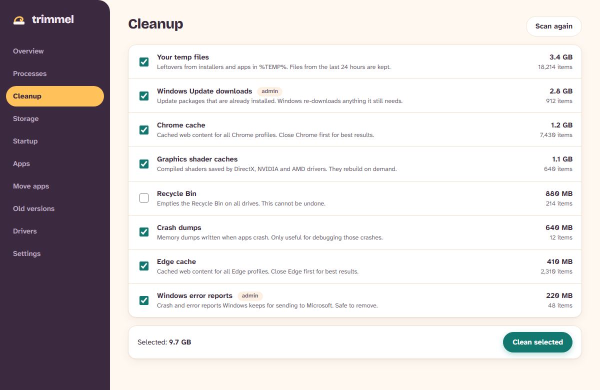
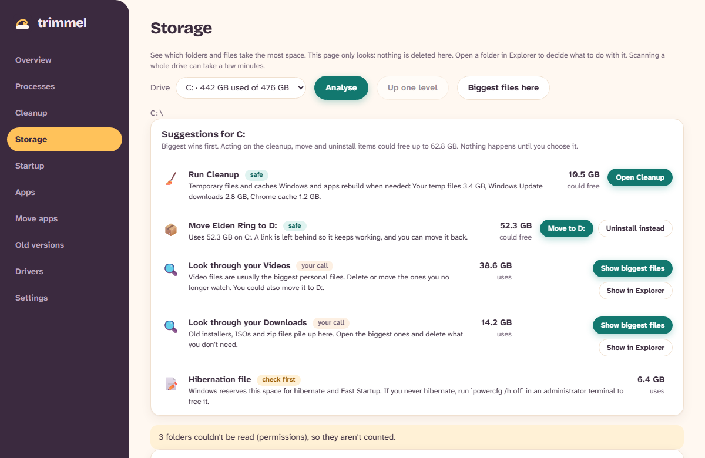
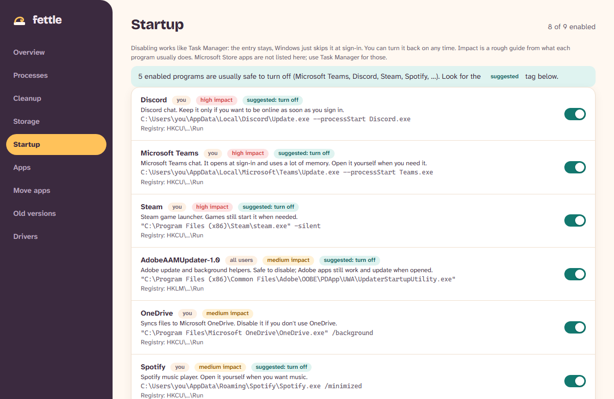
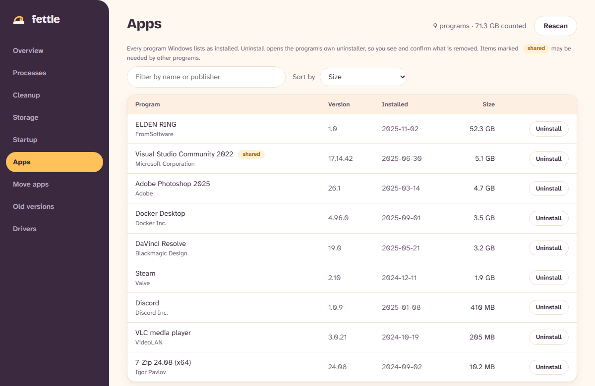
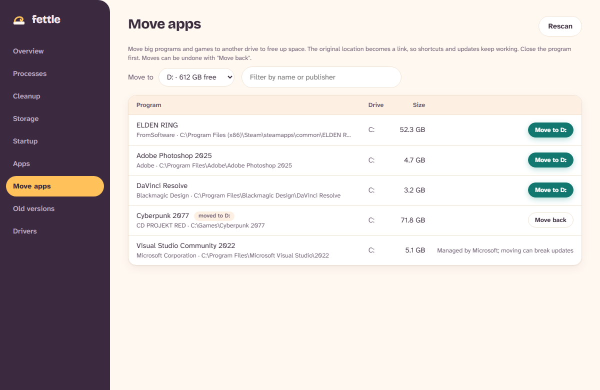
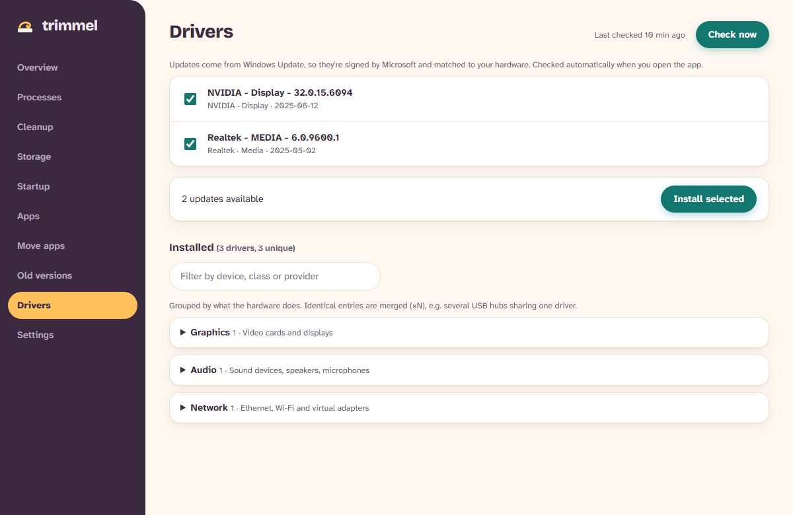

One app. Seven jobs.
- ClearJunk files and caches, with sizes shown first.
- FindWhat fills your drive, with suggestions.
- MoveBig apps and games to another drive.
- TrimWhat starts with Windows.
- RemoveApps you no longer use.
- UpdateDrivers, straight from Windows Update.
- UndoMoves and startup changes reverse in one click.
See it work
Pick a tool.
Health score
- One score out of 100
- The fixes that matter, biggest first
- One click to the right tool
- Optional tidy-up reminders
Cleanup
- Temp files, update downloads, browser and shader caches
- Sizes shown before anything goes
- Tick what you want gone
- Recent files are always kept

Storage
- Folder sizes, drill down in a click
- Suggestions: clean, move or review
- Biggest files, one click to Explorer
- Looks only. Deletes nothing

Startup
- Everything that launches at sign-in, tasks included
- Impact rating on each one
- Suggestions for what to switch off
- Flip it back on any time

Apps
- Every program, sorted by size
- Install dates at a glance
- Uninstall with the program's own uninstaller
- Shared components flagged

Move apps
- Send big programs to another drive
- They keep working, shortcuts and all
- Copy checked before anything changes
- Move back whenever you like

Drivers
- Updates straight from Windows Update
- No third-party driver sites
- A restore point is made first
- Installed drivers listed by type

No catch
Here is the whole deal.
Three steps
Two minutes, start to finish.
Get Trimmel
Free for Windows 10 and 11 (64-bit). It asks for administrator rights on launch so it can clean system folders and install drivers.
Download installer Portable zipWindows or Edge shows a warning?
The app is not code signed yet, so Windows does not know the publisher. That is expected for a new, small app.
- Edge: open the downloads list, click … beside the file, choose Keep, then Show more and Keep anyway.
- SmartScreen: choose More info, then Run anyway.
- Check it: in PowerShell run
Get-FileHash .\Trimmel-Setup.exeand compare with the SHA-256 shown here.
- Version
- latest
- Size
- –
- Released
- –
- SHA-256
–- Zip SHA-256
–
Thinking about Trimmel Plus
Everything above stays free. I am considering an optional paid Plus for time savers such as scheduled cleanup, low-disk alerts and unlimited app moves. Nothing is built or priced yet.
Quick answers
Why does it need administrator rights?
Cleaning system folders and installing drivers are protected actions in Windows. It asks once, at launch.
Is it safe?
It lists every item with its size first and removes only what you tick. Startup changes and app moves can be reversed.
How do I uninstall it?
Settings, Apps, Installed apps, then choose Uninstall. The uninstaller can also remove saved settings. Already have PC Optimizer 0.1? Run the new setup: it replaces the old version and keeps your settings.
How much does it cost?
Nothing. It is free and open source under the MIT licence.